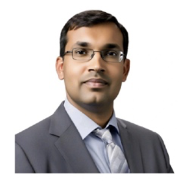

|
Dr. Yogesh Associate Professor Department of Computer Science & Engineering Chitkara University Punjab |
 |
Contact
• Email ID: dr.yogesh.phd@gmail.com
| Linkedin Profile |
Professional Summary
A highly accomplished and dedicated Associate Professor with over 14 years of experience in teaching, research, and academic leadership. Proven expertise in AI, Machine Learning, and computer vision, demonstrated by 41 patents filed and over 70 international publications in prominent journals and conferences (including Scopus and SCI-indexed). Recognized as a 'Top Performer' and awarded multiple 'Excellence Awards' for outstanding contributions to academia and research. Seeking to leverage a strong background in innovation and mentorship to drive research initiatives and foster student growth in a dynamic academic environment. Academic Program Leader and prolific innovator. Expertise in institutional logistics, research oversight, and industry service, including TPC roles, international guest invitations for major conferences, and startup mentorship.
Professional Experience
- Associate Professor, Department of CSE, Chitkara University, Punjab, India | Feb 2025 - Present
- Assistant Professor-III, Department of CSE Chitkara University, Punjab, India | July 2022 - Feb 2025
- Assistant Professor-I, Department of IT Amity University, Noida, India | July 2013 - July 2022
- Faculty, NIIT, Vijayawada, India | 1 year
- Software Programmer, Swarna Soft Pvt. Ltd, Hyderabad, India | 1 year
- Trainee, Samsung, Gurgaon | 6 months
- Trainee, BSNL, Patna | 1 month
Awards & Honors
- Excellence Award, Chitkara University, 2024 & 2023
- Top Performer Award, Chitkara University, Dec 2023
- Best Researcher Award, March 2021
- GATE Qualified, 2011
Leadership & Academic Service
- Program Leader, Amity University, Noida | Managed all student-related logistics, including timetable planning and management, resolving timetable clashes, and addressing student issues.
- Intellectual Property Portfolio: Generated a significant portfolio of proprietary technology, resulting in the filing of 41 patents.
- Research Portfolio: Authored and co-authored 70 peer-reviewed research publications in leading international journals and conferences.
- Lead, The Institution of Engineers (India) CSE student chapter, Chitkara University, Punjab Campus.
- Technical Program Committee (TPC) Member, Numerous conferences (e.g., SPIN 2023, GEIS 2021)
- Session Chair, Global Emerging Innovation Summit (GEIS 2021)
- Mentor for Startup companies
- Organizing Committee, District level Quiz Competition (PEDA, Punjab Gov. unit), 2024
- Guest Editor, Journal "Mechatronics Systems and Control" (Scopus/ESCI/WoS Indexed), 2022
Roles & Responsibilites
• Lead and mentor undergraduate and graduate students in research projects, resulting in numerous patent filings and publications.
• Spearheaded initiatives as the lead of the IE(I) CSE student chapter, enhancing student engagement and professional development opportunities.
• Served as a Course Technical Head (CTH) and Course Coordinator (CoC), overseeing curriculum development and instructional quality.
• Contributed to the department's research output with several publications and patents.
• Mentored student startups, providing guidance on technical and business development.
• Awarded multiple "Excellence Awards" for teaching and research performance.
• Taught a variety of courses in information technology and computer science.
• Engaged in research and development, contributing to the academic community through conference presentations and journal articles.
Education
- Ph.D., Amity University Uttar Pradesh, Noida, India
- M. Tech, Amity University Uttar Pradesh, Noida, India
- B. Tech, Magadh University, Patna, India
- 12th R. P. S. College, Patna, India
- 10th Modern Public School, Deoghar, India
Certifications & Professional Development
Artificial Intelligence, Machine Learning & Deep Learning
• Google Prompting Essentials from Coursera, in 2025
• Machine learning for All certificate by coursera in 2023.
• Introduction to Artificial Intelligence by Skillup in 2022.
• Introduction to Supervised & Unsupervised Machine Learning by Skillup in 2022.
• Building Recommendation System by Great Learning in 2021.
• Image and Video Processing: From Mars to Hollywood... by Duke University, Coursera, 2021.
• Machine Learning course authorized by Stanford University, Coursera, 2020.
• Improving Deep Neural Networks: Hyperparameter Tuning, Regularization and Optimization,
DeepLearning.AI, Coursera, 2020.
• Structuring Machine Learning Projects, DeepLearning.AI, Coursera, 2020.
• Machine Learning Onramp training course by Mathworks Training Services, 2020.
• Deep Learning Onramp training course by Mathworks Training Services, 2020.
• Machine Learning, Data Science and Deep Learning with Python by Udemy in 2020.
Data Analysis & Data Science
• Data Analysis Projects course offered by Great Learning Academy, in 2024.
• Data Analytics using ChatGPT with Excel and Python course offered by Great Learning Academy in
2024.
• Data Analysis using Excel course offered by Great Learning Academy, in 2024.
Leadership, Management & Teams
• Specialization in Leading People and Teams certificate by coursera in 2023.
• Managing Talent certificate by coursera in 2023.
• Leading Teams certificate by coursera in 2023.
• Influencing People certificate by coursera in 2023.
• Inspiring and Motivating Individuals certificate by coursera in 2023.
• Leading People and Teams Capstone certificate by coursera in 2023.
Systems, Networking & Cybersecurity
• Red Hat System Administration II (RH124) certificate by Red Hat in 2023.
• Red Hat System Administration II (RH134) certificate by Red Hat in 2023.
• Introduction to Cyber Security by Skillup in 2022.
Programming & Development
• Introduction to C plus plus by Skillup in 2022.
• Learn Advanced C++ Course Online by Skillup in 2022.
• Front End Development – HTML by Great Learning in 2022.
• Matlab Onramp training course by Mathworks Training Services, 2020.
Academic & Faculty Development
• Guru-Dakshta, Faculty Induction Programme, conducted by the University from September 2023 to
May 2024.
• Contributing and participating in ICESC 2023 conference.
• Contribution as TPC Member in SPIN 2023 conference.
• Contributing and participating in DICCT-2023 conference.
• Contributing and participating in ICKECS-2022 conference.
• Contributing and participating in ICMNWC-2022 conference.
List of Publications
Conference Papers
Yogesh and A. K. Dubey, "Fruit defect detection based on speeded up robust feature technique," 2016 5th International Conference on Reliability, Infocom Technologies and Optimization (Trends and Future Directions) (ICRITO), Noida, 2016, pp. 590-594.doi: 10.1109/ICRITO.2016.7785023
Y. Kumar, A. K. Dubey and A. Jothi, "Pest detection using adaptive thresholding," 2017 International Conference on Computing, Communication and Automation (ICCCA), Greater Noida, 2017, pp. 42-46. doi: 10.1109/CCAA.2017.8229828.
Yogesh, A. K. Dubey, T. Vyas and M. Thukral, "Segmentation techniques for external defect detection in pome fruits," 2017 6th International Conference on Reliability, Infocom Technologies and Optimization (Trends and Future Directions) (ICRITO), Noida, 2017, pp. 615-618.
doi: 10.1109/ICRITO.2017.8342501
Yogesh, A. K. Dubey, R. Arora and A. Ahmed, "A comparative review of various segmentation methods and its application," 2017 6th International Conference on Reliability, Infocom Technologies and Optimization (Trends and Future Directions) (ICRITO), Noida, 2017, pp. 645-650. doi: 10.1109/ICRITO.2017.8342507
Yogesh, A. K. Dubey, R. Arora and S. Yadav, "A review and comprehensive comparison of image de-noising techniques," 2017 6th International Conference on Reliability, Infocom Technologies and Optimization (Trends and Future Directions) (ICRITO), Noida, 2017, pp. 624-629.
doi: 10.1109/ICRITO.2017.8342503.
Yogesh, P. Singhal, A. K. Dubey and A. Goyal, "A comparative approach for image segmentation to identify the defected portion of apple," 2017 6th International Conference on Reliability, Infocom Technologies and Optimization (Trends and Future Directions) (ICRITO), Noida, 2017, pp. 604-608. doi: 10.1109/ICRITO.2017.8342499
A. Jothi, S. Jayaram, Yogesh and A. K. Dubey, "Intra-ocular lens defect detection using generalized hough transform," 2017 6th International Conference on Reliability, Infocom Technologies and Optimization (Trends and Future Directions) (ICRITO), Noida, 2017, pp. 177-181.
doi: 10.1109/ICRITO.2017.8342420
T. Makkar, Y. Kumar, A. K. Dubey, Á. Rocha and A. Goyal, "Analogizing time complexity of KNN and CNN in recognizing handwritten digits," 2017 Fourth International Conference on Image Information Processing (ICIIP), Shimla, 2017, pp. 1-6.doi: 10.1109/ICIIP.2017.8313707
T. Makkar, S. Verma, Yogesh and A. K. Dubey, “Analysis and Detection of Fruit Defect using Neural Network”, 4th International Conference on Recent Developments in Science, Engineering and Technology REDSET-2017, ISBN: 978-981-10-8526-0, pp- 554-567 October 2017, DOI https://doi.org/10.1007/978-981-10-8527-7_46
T. Makkar, Yogesh, A. K. Dubey, A. Goyal and S. Tirumalasetty, “A Generalized State of the Art Model for Precise Visualization and Analysis using Choice Based Segmentation Technique for Identification of Defected Portions of Fruits”, 4th Annual Conf. on Computational Science & Computational Intelligence (CSCI'17), American Council on Science & Education, Las Vegas, Nevada, USA, pp. 495-500, Dec, 14-16, 2017. DOI 10.1109/CSCI.2017.83.
S. Baghel and Yogesh, "Detecting Future Terrorism Trend in India Using Clustering Analysis," 2018 7th International Conference on Reliability, Infocom Technologies and Optimization (Trends and Future Directions) (ICRITO), Noida, India, 2018, pp. 431-438.
doi: 10.1109/ICRITO.2018.8748567
Yogesh, A. K. Dubey and R. R. Arora, "A Comparative Approach of Segmentation Methods Using Thermal Images of Apple," 2018 7th International Conference on Reliability, Infocom Technologies and Optimization (Trends and Future Directions) (ICRITO), Noida, India, 2018, pp. 412-418.
doi: 10.1109/ICRITO.2018.8748437
Yogesh, A. Ahmed and I. Ali, "Non-Destructive Analysis of Defected Portions of Fruits Using Integrated Segmentation Process," 2018 7th International Conference on Reliability, Infocom Technologies and Optimization (Trends and Future Directions) (ICRITO), Noida, India, 2018, pp. 433-440. doi: 10.1109/ICRITO.2018.8748553
Yogesh, I. Ali and A. Ahmed, "Segmentation of Different Fruits Using Image Processing Based on Fuzzy C-means Method," 2018 7th International Conference on Reliability, Infocom Technologies and Optimization (Trends and Future Directions) (ICRITO), Noida, India, 2018, pp. 441-447.
doi: 10.1109/ICRITO.2018.8748554
T. Makkar and Yogesh, "A Computer Vision-Based Comparative Analysis of Dual Nutrients (Boron, Calcium) Deficiency Detection System for Apple Fruit," 2018 4th International Conference on Computing Communication and Automation (ICCCA), Greater Noida, India, 2018, pp. 1-6.
doi: 10.1109/CCAA.2018.8777678
T. Makkar, H. S. Rathore, Yogesh & S. K. Dubey, “Dual-Mode Self Controlled Irrigation System for Home”, Proceeding of the IEEE 2019 International Conference on Signal Processing and Communication (ICSC), Jaypee Institute of Information Technology, Noida, India, 7-9 Mar.2019.
S. Goel, M. Kumar, & Yogesh, “A Real-Time Sign Language Interpretation of forearm based on Data Acquisition Method”, Proceeding of the IEEE 2019 International Conference on Signal Processing and Communication (ICSC), Jaypee Institute of Information Technology, Noida, India, 7-9 Mar.2019.
A. Sharma and Yogesh, “A Review on Data Flow Risk based on IoT”, Proceeding in IEEE International Conference on "Issues and Challenges in Intelligent Computing Techniques" (ICICT-2019), KIET Group of Institutions, Ghaziabad, India, Sept. 27-28, 2019.
Y. Jain and Yogesh, “A Survey on Railway Assets: A Potential Domain for Big Data”, Proceeding in IEEE International Conference on "Issues and Challenges in Intelligent Computing Techniques" (ICICT-2019), KIET Group of Institutions, Ghaziabad, India, Sept. 27-28, 2019.
S. Goel, M. Kumar and Yogesh, “An Improved Segmentation Algorithm for Detecting Defects on Fruit Surface”, Proceeding in IEEE International Conference on "Issues and Challenges in Intelligent Computing Techniques" (ICICT-2019), KIET Group of Institutions, Ghaziabad, India, Sept. 27-28, 2019.
L. Dedha and Yogesh, “A Comparative Study of Fruit Defect Segmentation Techniques”, Proceeding in IEEE International Conference on "Issues and Challenges in Intelligent Computing Techniques" (ICICT-2019), KIET Group of Institutions, Ghaziabad, India, Sept. 27-28, 2019.
N. Samim & Yogesh, “Machine Learning and Feature Extraction: A review”, Proceedings of International Conference On Machine Intelligence And Data Science Applications, 978-981-33-4086-2, 496436_1_En (32), MIDAS, Sept. 4-5, 2020.
C.V. Sagar & Yogesh, “A Review: Computer Vision based Pattern Recognition of Image”, Proceedings of International Conference On Machine Intelligence And Data Science Applications, 978-981-33-4086-2, 496436_1_En (32), MIDAS, Sept. 4-5, 2020.
S. Mishra, P. Saxena & Yogesh, “Adopting Artificial Neural Network Modelling Technique to Analyze and Design Microstrip Patch Antenna for C-Band Applications”, Proceddings of Springer Book Chapter Micro-strip Antenna Design for Wireless Applications, , 2020.
S. Patra, K. S. Yadav & Yogesh, “Face Emotion Recognition Machine Learning” International Conference on Global Emerging Innovations Summit (GEIS), Bentham Science, 9-10 April 2021.
B. B. Chandra & Yogesh, “Early Detection and Classification of Breast Cancer Using Mammograms by Machine Learning”, International Conference on Global Emerging Innovations Summit (GEIS), Bentham Science, 9-10 April 2021.
M. Malhotra & Yogesh, “A Review on Implementation of Cloud Security in Aadhar Card Project”, International Conference on Global Megha MalhotraEmerging Innovations Summit (GEIS), Bentham Science, 9-10 April 2021.
N. Shamim, W. Jagati, S. Roy & Yogesh, “Early Detection and Classification of Breast Cancer Using Mammograms by Machine Learning”, International Conference on Global Emerging Innovations Summit (GEIS), Bentham Science, 9-10 April 2021.
N. Shamim, A. Mittal, and Yogesh, “Artificial Intelligence Based Prediction of Covid-19 using Chest CT Scan,”, Proceeding of IEEE 9th International Conference on Reliability, Infocom Technologies and Optimization, 3rd - 4th September 2021.
A. Mittal, N. Shamin, B. Chandra, Yogesh, and U. Keshwala, “Early Breast Cancer Diagnosis and Risk Prediction based on Machine Learning,”, Proceeding of IEEE 9th International Conference on Reliability, Infocom Technologies and Optimization, 3rd - 4th September 2021.
A. Taneja and Yogesh, “A Robust Method for Emotion Recognition from Face Datasets using Machine Learning,”, Proceeding of IEEE 9th International Conference on Reliability, Infocom Technologies and Optimization, 3rd - 4th September 2021.
A. Taneja and Yogesh, “Development of A Real-Time Emotion Recognition System Using Artificial Intelligence,”, Proceeding of IEEE 4th International Conference on Recent Developments in Control, Automation & Power Engineering (RDCAPE-2021), 7th - 8th October 2021.
A. Bhardwaj, N. Hasteer, Yogesh and Y. Kumar, "Deep Learning based Fruit Defect Detection System", 3rd International Conference on Electrical and Electronics Engineering, Springer, University of Malaya, 8-9 Jan. 2022.
Tulli, S., Yogesh (2023). Application of Machine Learning for Analysis of Fruit Defect: A Review. In: Shukla, A., Murthy, B.K., Hasteer, N., Van Belle, JP. (eds) Computational Intelligence. Lecture Notes in Electrical Engineering, vol 968. Springer, Singapore. https://doi.org/10.1007/978-981-19-7346-8_45.
P. Mittal, A. Maggu, K. Malhotra and Yogesh, “Machine Learning Classification of Patterns in X-RAY For the Diagnosis of Covid-19”, IEEE International Mobile and Embedded Technology Conference MECON – 2022, Amity University, 10-11 March, 2022
S. Pandey, S. Handooand Yogesh, “Facial Emotion Recognition using Deep Learning”, IEEE International Mobile and Embedded Technology Conference MECON – 2022, Amity University, 10-11 March, 2022
M. P. Singh, V. P. Singh, N. Hasteer and Yogesh, Disease Detection for Cotton Crop through Convolutional Neural Network, 10th International Conference on Recent Trends in Computing (ICRTC 2022)” on 3rd & 4th June 2022 (Accepted).
A. Baranwal, A. Goyal, M. Mishra and Yogesh, Potato Plant Disease Classification Through Deep Learning, IEEE International Conference on “Machine Learning, Big Data, Cloud and Parallel Computing: Trends, Perspectives, and Prospects Com-IT-Con 2022, 26th-27th, May 2022 (Accepted).
P. S. Hada, B. Singh, P. Saroha and Yogesh, AI based Event Management Web Application, IEEE International Conference on “Machine Learning, Big Data, Cloud and Parallel Computing: Trends, Perspectives, and Prospects Com-IT-Con 2022, 26th-27th, May 2022 (Accepted).
Yogesh, G. S. P. Ghantasala and A. Priya, "Artificial Intelligence Based Handwriting Digit Recognition (HDR) - A Technical Review," 2023 International Conference on Device Intelligence, Computing and Communication Technologies, (DICCT), Dehradun, India, 2023, pp. 275-278, doi: 10.1109/DICCT56244.2023.10110186.
T. Parameswaran, S. Kaushik and Yogesh, "A Methodology to Locate Image Falsification Using Adaptive Segmentation and Feature Extraction," 2022 International Conference on Knowledge Engineering and Communication Systems (ICKES), Chickballapur, India, 2022, pp. 1-5, doi: 10.1109/ICKECS56523.2022.10059953.
D. N. Malleswari, D. N. Rao, P. Vidyullatha, G. S. P. Ghantasala, R. Sathiyaraj and Yogesh, "Enhanced SS-FIM Algorithm For High Utility Uncertain Itemsets," 2022 IEEE 2nd International Conference on Mobile Networks and Wireless Communications (ICMNWC), Tumkur, Karnataka, India, 2022, pp. 1-5, doi: 10.1109/ICMNWC56175.2022.10031871.
D. Vij, Y. Yogesh, D. Srivastava and H. Shankar, "Detection of Acoustic Scenes and Events using Audio Analysis – A Survey," 2023 3rd International Conference on Advance Computing and Innovative Technologies in Engineering (ICACITE), Greater Noida, India, 2023, pp. 316-320, doi: 10.1109/ICACITE57410.2023.10183195.
A. Priya, S. Sharma, K. Sinha and Y. Yogesh, "Community Detection in Networks: A Comparative study," 2023 International Conference on Device Intelligence, Computing and Communication Technologies, (DICCT), Dehradun, India, 2023, pp. 505-510, doi: 10.1109/DICCT56244.2023.10110206.
Kapit, N. Singh, H. Shankar and Yogesh, "Error Rate Analysis of M-ary Signaling for Reconfigurable Intelligent Surface," 2023 4th International Conference on Electronics and Sustainable Communication Systems (ICESC), Coimbatore, India, 2023, pp. 253-256, doi: 10.1109/ICESC57686.2023.10193094.
H. Shankar and Yogesh, “MGF based BER and Channel Capacity Analysis of Fisher Snedecor Composite Fading Model,” MGF based BER and Channel Capacity Analysis of Fisher Snedecor Composite Fading Model (Simulation Techniques of Digital Twin in Real Time Applications) 2023
H. Shankar and Yogesh, “Comprehensive Analysis of Error Rate and Channel Capacity of Fisher Snedecor Composite Fading Model,” MGF based BER and Channel Capacity Analysis of Fisher Snedecor Composite Fading Model (Simulation Techniques of Digital Twin in Real Time Applications) 2023.
Yogesh and D. Vij, “Assessing the Role of a Restaurant Business using Website,”, International Conference on Applied Machine Learning and Data Analytics AMLDA 2023.
Priya, A., Mandal, S., & Yogesh. (2024). Parallel Artificial Bee Colony Algorithm for Solving Advance Industrial Productivity Problems. In B. Holland & K. Sinha (Eds.), Handbook of Research on Innovative Approaches to Information Technology in Library and Information Science (pp. 21-41). IGI Global Scientific Publishing. https://doi.org/10.4018/979-8-3693-0807-3.ch002, 2024.
Yogesh et., Pathways To Innovation And Equity In Higher Education, International Seminar on Quality Assurance in Higher Education (QAHE-2024).
Journal Papers
Ahmed and Yogesh, “Electromagnetic Band Gap Coupled Microstrip Antenna for UWB Applications”, IOSR Journal of Electronics and Communication Engineering (IOSRJECE), ISSN: 2278-2834, vol. 2, Issue 6 (Sep-Oct 2012), pp.01-03, 2012
Yogesh, A. Ahmed and S. Erande, “A Novel Design of Fractal Antenna with EBG-GP”, International Journal of Computational Engineering Research, ISSN: 2250-3005, vol. 2 Issue. 5, September 2012, pp. 1660-1661, 2012
Yogesh and R. P. Tripathi, “Networking Issues and Challenges in Cloud Computing”, IOSR Journal of Electronics and Communication Engineering (IOSRJECE), e-ISSN: 2278-0661, ISSN: 2278-8727, vol. 17, Issue 2, (Mar-Apr. 2015), pp.48-49, 2015
Yogesh, A. K.Dubey, R. Arora, A. Agarwal and A. Sarkar, “Adaptive Thresholding Based Segmentation of Infected Portion of Pome Fruit”, Journal of Statistics & Management Systems, Taylor & Francis, Vol. 20, Number 4, ISSN: 0972-0510, pp. 575–584, July 2017. Indexed: WoS & eSCI
Yogesh, A. K.Dubey and R. Arora, “Development of Feature-Based Classification of Fruit using Deep Learning”, International Journal of Innovative Technology and Exploring Engineering (IJITEE), vol.8 (12), ISSN No. 2278-3075, pp. 3285-3290, Oct. 2019. Indexed: Scopus
Yogesh, A. K.Dubey and R. Arora, “Automatic Detection and Classification of Nutrients Deficiency in Fruit Based on Automated Machine Learning”, International Journal of Engineering and Advanced Technology (IJEAT), vol.-9(1), ISSN No. 2249-8958, pp. 1901-1909, Oct. 2019. Indexed: Scopus
Yogesh, A. K Dubey, R. Arora and A. Rocha, “Computer vision based analysis and detection of defects in fruits causes due to nutrients deficiency”, Cluster Computing, Published on 18 December 2019 (2019). DOI: https://doi.org/10.1007/s10586-019-03029-6 Indexed: SCIE & Scopus, IF: 3.458, Publisher: Springer
Yogesh, A. K Dubey, R. Arora and A. Rocha. Multiclass classification of nutrients deficiency of apple using deep neural network. Neural Comput & Applic (2020). DOI: https://doi.org/10.1007/s00521-020-05310-x Indexed: SCIE, Scopus,
IF: 4.774, Publisher: Springer
Yogesh, A. K. Dubey, R. Arora and A. Rocha, “Deep Learning based Automated Fruit Nutrients Deficiency Recognition System”, Journal of Information Science and Engineering. Indexed: SCIE, Scopus, IF: 0.541, Publisher: IIS
Yogesh, A. K. Dubey, R. Arora and A. Mathur, “Fruit Defect Prediction Model (FDPM) based on Three-Tier Validation”, Journal of Nondestructive Evaluation, vol. 40, issue. 45, 2021.Indexed: SCI & Scopus, IF: 1.950, Publisher: Springer
Y. Kumar, N. Hasteer, A. Bhardwaj and Yogesh, A novel convolutional neural network architecture for detection
and classification of diseases in fruits, Current Sciene, vol. 122 (8), 2022. Indexed: Scopus
Yogesh, A. K. Dubey, and A. Rocha, “A non-invasive approach for calcium deficiency detection in pears using machine
learning”. Neural Computing & Application, 2023. https://doi.org/10.1007/s00521-023-08444-w, Indexed:SCIE,Scopus, IF: 4.774, Publisher: Springer
Book Chapters
S. Mishra, P. Saxena & Yogesh, “Adopting Artificial Neural Network Modelling Technique to Analyze and Design Microstrip Patch Antenna for C-Band Applications”, Proceddings of Springer Book Chapter Micro-strip Antenna Designfor Wireless Applications, , 2020.
Palak, Yogesh & D. Vi, The Hydrogen Economy: A Transformative Paradigm for the Future of Energy, Hydrogen Economy: A road to Oil of Future (Review, Technology and Simulation Modeling), 2025 (Accepted).
Palak, Yogesh & A. Priya, The Impact of Artificial Intelligence on Green Hydrogen and Renewable Energy Efficiency, AI IN Renewable Energy Book Chapter, 2025. (Accepted).
K. Sharms & Yogesh, “Revolutionizing Thermal Battery Technology: A key strategy to reserve renewable energy with AI”, Artificial Intelligence for Renewable Energy Systems, 2025 (Accepted).
J. Kaur, A. Luthra & Yogesh, “Data to Decisions: A Comprehensive Review of Enhancing Transparency in Stock Market Share Recommendation Systems and Generate Buy/Sell Signal”, AI-Driven Decision Making: Tools and Techniques, 2025 (Accepted).
K. Sharma, H. Jain, L. M. Singha, & Yogesh, “Revolutionized Breast Cancer Detection: Enhancing AI and Machine Learning”, AI-Driven management: Process Optimization for Competitive Advantage Using Algorithms, 2025 (Accepted).
Yashika, Gayatri & Yogesh, “AI-Driven Smart Water Demand Forecasting System With The Impacts of Socio-Economic Factors”, Integrated Smart Technologies for Sustainable Water Systems Using Computer Applications, 2025 (Accepted).
Patents
1 Smart Mirror with light control and height 1184/DEL/2015 2015
2 A Device For Producing Output Dc Voltage Without Commutator And Power 201611034253 2016
3 Sensor-based automatic faucet to prevent water 880/DEL/2015 2015
4 Smart Mirror 201611035712 2016
5 A System And Method For Generating Electricity 201611041232 2016
6 Robotic Window Cleaner 201711012583 2017
7 Smart Bed To Monitor Sleeping Baby Movement And Crying 201711014582 2017
8 Synchronous GMT Based Analog Clock 201711014581 2017
9 Portable Fungus Scanner 201711044748 2017
10 Smart Pot 201811006551 2018
11 Ophthalmological Biometry Using Ultrasound-Assisted With Toric Calculator 201611035437 2018
12 A System And Method For Defect Detection In Pome Fruits 201611036655 2018
13 Self-Driven Suitcase 201811018904 2018
14 A Biometric System And Method With Unique Security Parameters 201811025856 2018
15 Smart Tap with Automatic Temperature Control 201811032314 2018
16 A Multipurpose Floor Cleaning Wiper 201811039168 2018
17 All-weather smart geyser 201911011656 2019
18 An improved nail care device 201911011658 2019
19 A smart electronic portable voting system 201911011665 2019
20 Smart parking system 201911016203 2019
21 Smart Duster 371215-001 2022
22 Examination Pen 372699-001 2022
23 Fan cum Air Purifier: NOVA CAELI 371214-001 2022
24 Foldable Mouse Cum Keyboard 385357-001 2022
25 Smart Classroom Board Cleaning 379918-001 2022
26 Smart Helmet 373747-001 2022
27 Smart Toilet 387869-001 2023
28 Spring-based earthquake-resistant bed for shock absorption and stability CHR 1210 2025
29 Dynamic HealthCare Band UPENBL250625-3192 2025
30 Spring-Based Earthquake-Resistant Bed for Shock Absorption and Stability UPENBL250723-3402 2025
31 Adaptive Micro-Suppression Unit (AMSU) for Vehicle Engine Bays UPENBL250812-3475 2025
32 A System and Method for the Automated Multi-Modal Disinfection and Maintenance of a Gas Lighter UPENBL250902-3529 2025
33 Next-Gen AI Smart Helmet with Biometric Access, Adaptive Vision, and Voice-Interactive Display. UPENBL250902-3535 2025
34 Proactive Ai-Integrated Gas Stove With Autonomous Fire And Leak Suppression UPENBL250910-3571 2025
35 Smart Ai-Powered Real-Time Stress Detection And Adaptive Calming Interventions Wearable Pendant UPENBL250910-3566 2025
36 Solar-Powered Intelligent Clothes Care & Drying Stand With Fabric-Adaptive Control, Dual-Sensor Dryness Detection And Energy-Aware Wireless Monitoring System UPENBL250910-3564 2025
37 AI-Powered Smart Ceiling Fan-Light System with Retractable Blades, Automated Dust Protection and Indoor Health Monitoring UPENBL251015-3717 2025
38 PetGuardian: AI-Enabled Smart Modular System for Automated Feeding, Hydration, Medication and Real-Time Health Monitoring UPENBL251015-3715 2025
39 Smart Office Chair with Predictive Health Monitoring, Adaptive Posture
Guidance, and Personalized Comfort Control DES2021 (Processing) 2025
40 Intelligent Writing Instrument with Integrated Handwriting Recognition and Language Feedback System UTI3701 (Processing) 2025
41 A standalone, AI-powered smart earbud with kinetic self-charging and predictive offline storage UTI3721 (Processing) 2025
Training and Workshops
• 6 months Industrial training from Samsung India Electronics Pvt. Ltd. Gurgaon.
• 6 months training on Accelerated ANIIT Software Engineering, NIIT Hyderabad.
• 6 months training on Microsoft .NET from APJ Project, Patna.
• 2 months training on VLSI from Digitech Solutions, Bangalore.
• 1-month summer training from AMITY University.
• 1-month summer training from BSNL, Patna.
Workshop/FDP/Conference
• 5-day Online International FDP, "Advancements in Next Generation Computing and Communications in the IoT Age, organized by Sister Nivedita University, India 2025.
• 5-day Online Faculty Development Program on Blockchain & Web3 Organized by the Department of CSE & CSE (Data Science), Sri Siddhartha Institute of Technology, SSAHE, Karnataka, 2025.
• 5 days FDP on "The Future of Generative Al in Academic Research and Publishing" by Chitkara University, 2024.
• Workshop on Agile Software Development, 15 -19 December 2014 at Infosys, Chandigarh.
• 2016 5th International Conference on Reliability, Infocom Technologies and Optimization (Trends and Future Directions) (ICRITO), Noida, Sept. 7-9, 2016.
• 3rd IEEE International Conference on Signal Processing and Integrated Networks (SPIN 2016) on 11- 12 Feb 2016.
• 6th International Conference on Cloud Computing, Data Science & Engineering, 14-15th Jan 2016.
• Faculty Enablement Program on "Foundation Program 4.0, 4th - 9th Jan 2016 at Infosys, Chandigarh.
• Workshop on Embedded System & Robotics by Softcon Group Pvt. Ltd.
• 2017 6th International Conference on Reliability, Infocom Technologies and Optimization (Trends and Future Directions) (ICRITO), Noida, Sept. 20-22, 2017.
• Workshop on Matlab by CETPA.
• 4th IEEE International Conference on Signal Processing and Integrated Networks (SPIN 2017) on 2- 3 Feb 2017.
• 7th International Conference on Cloud Computing, Data Science & Engineering, 12-13th Jan, 2017.
• Two-week FDP on Entrepreneurship Development sponsored by National Science and Technology Entrepreneurship Board, Department of Science and Technology (DST), Govt. of India, Nov-Dec. 2018.
• 8th International Conference on Cloud Computing, Data Science & Engineering, 11-12th Jan 2018.
• 7th International Conference on Reliability, Infocom Technologies, and Optimization (Trends and Future Directions) (ICRITO), 29-31 Aug. 2018.
• 5th IEEE International Conference on Signal Processing and Integrated Networks (SPIN 2018) on 22- 23 Feb 2018.
• 11th TELECOM INDIA 2018 organized by ASSOCHAM, Hotel Imperial, Janpath, New Delhi, 16th November 2018.
• 9th International Conference on Cloud Computing, Data Science & Engineering, 10-11th Jan 2019.
• Seminar on Emerging Trends in Safety on Roads, 5th February 2019, India Habitat Centre, New Delhi.
• 2nd Open Source Summit 2019, Shangri-La's - Eros Hotel, Delhi, 21st February 2019.
• 6th IEEE International Conference on Signal Processing and Integrated Networks (SPIN 2019) on 7- 8 March 2019.
• Career Expo – 2019, 29 March 2019 at Amity University Uttar Pradesh, Noida Campus.
• SAMSUNG Advanced Institute of Technology-2019 Global Research Outreach (“GRO”) Program on 27th May 2019, Amity Noida Campus.
• FDP on Machine Learning, Deep Learning using Python scheduled from 26-28 June 2019, Amity University, Noida.
• AMI-HACKS - Hardware Hackathon on 22nd October 2019 organized by Amity University IIC and Amity School of Engineering and Technology.
• Field visit on 11th October 2019 to Gheja village near Sector 94, Noida for Idea generation.
• DIC 2019 visit on 26 Nov. 2019, IIT Delhi, India.
• 10th International Conference on Cloud Computing, Data Science & Engineering, 29-31th Jan 2020.
• 7th IEEE International Conference on Signal Processing and Integrated Networks (SPIN 2020) on 27- 28 Feb. 2020.
• FDP on Deep Learning Applications in Computer Vision, 4th - 8th May 2020, by IIIT-Naya Raipur
• FDP on Machine Learning and Applications, 18th to 23th May 2020, by Sagar Institute of Research and Technology
• FDP on Renewable Energy Technologies, Integration To The Power Grid & E-Vehicle, 28 May- 01 June 2020, by SAI RAM INSTITUTE OF TECHNOLOGY, Chennai
• Workshop on Artificial Intelligence for Science and Engineering Applications in MATLAB, 29th May 2020, by B.S. Abdur Rahman Crescent Institute of Science and Technology, Chennai-48.
• 3 days online workshop on “Curriculum Design, E-Content Development and Quality Assurance for flipped mode and online Teaching-Learning during odd semester of Academic Session 2020-21”, 30 May-01 June 2020, by Dean (Academic Quality and Accreditations) / Dr. Sagina Hooda.
• 5-Day Global E-Symposium on “Global Pandemic Outbreak: Role of Technology & Automation, 1st June, 2020 to 5th June, 2020, by Dept. of CSE JSS Academy of Technical Education, Noida
• Workshop on TCS iON Industry Honour Certification (IHC), 15th June 2020, by TCS iON
• International summit in AI and Data Science, 18-20th June, by RBCDSAI programme committee.
• Science Leadership Workshop 6 days, 22 June-27 June 2020, by Dr. Felix, Associate Professor, Department of Botany, Central University of Punjab regarding Science Academics
• FDP "Recent trends in Database Technologies, 22 June- 26 June 2020, by Pravin Sonsare.
• 11th International Conference on Cloud Computing, Data Science & Engineering (Confluence), 2021.
• International Workshop on Renewable Energy and Storage Devices for Sustainable Development (IWRESD-2021)
• Webinar On "Writing Good Research Grant Proposals" By Dr. Meenakshi Munshi, Advisor, DBT.
• Guest Lecture by An open-source code combining Dynamical Mean Field Theory with various Density Functional Theory packages Confirmation, 2021.
• Online workshop cum hands-on training on How to catch Fake/Predatory/Cloned journals in Academics on 18th February 2021.
• How to write a successful PhD proposal by EURAXESS India, Feb. 2021.
• Global Logic SDET Training Program, 27th Jan- 11th February 2022.
• FDP on “Intellectual Property Right to Commercialization” by OPFLC, CURIN on May 20, 2023.
• Connect and Test Your Networks Using Packet Tracer by CURIN, on July 3, 2023.
• One Week faculty Development Program on "MATLAB Galaxy: Navigating Modelling, IoT, and Beyond" organized by Chitkara University on 18th September - 22 September 2023.
Technical Skills
• Programming Languages: Python, C, C++, Java, Matlab, Front End (HTML, CSS, Java Script)
• Cloud & Tools: Azure, Microsoft Office
• Database Management: SQL
• Operating Systems: Windows, macOS
Personal Details
- Language: Hindi, English
- Natiionality: Indian
- Marital Status: Single